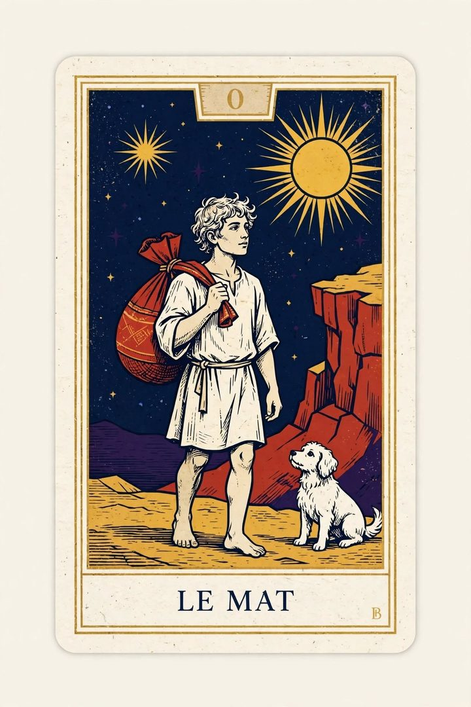

Le Mat
sans numéro · liberté, seuil, pèlerinage
Le Mat
sans numéro · liberté, seuil, pèlerinage
- Voir Un marcheur au sac, le chien aux talons, le pas déjà hors du cadre. Pas de chiffre sur la lame : il n’appartient pas à la série comme les autres.
- Noyau Partir sans tout maîtriser. Camoin : pèlerin en quête, pas « fou ». Nova : élan hors cadre. Tradition usuelle : liberté, ailleurs — ou fuite.
- Dans une question Qu’est-ce qui demande de quitter le connu ? Le Mat ouvre une route ; il ne promet pas l’arrivée.
- Endroit / envers Actif : le pas se fait. Retenu : on tourne autour du départ, ou on fuit en appelant cela voyager.
- Piège Le confondre avec Le Bateleur (commencer avec des outils) ou avec La Maison Dieu (le cadre qui cède). Le Mat n’a pas de table. Il a un chemin.
Écart : Camoin refuse le mot folie à l’endroit ; la tradition populaire le garde en ombre. À l’atelier, la folie n’est pas la lame — c’est le pas sans regard.